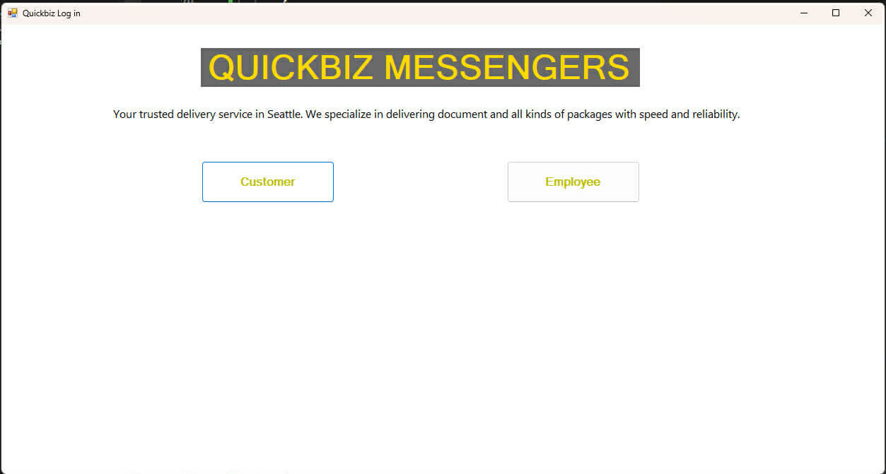
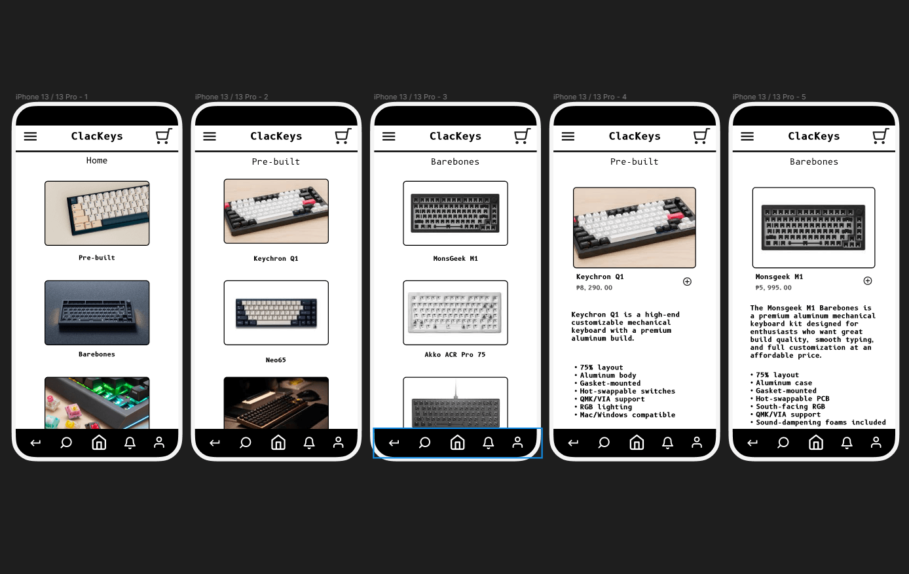

// Selected Works

JavaScript Functions
HTML5 • Tailwind CSS • JavaScript
A deep dive into functional programming and DOM manipulation to create interactive user experiences.
Source Code →
Tailwind Styling
HTML5 • Tailwind CSS
Exploration of utility-first CSS to build responsive interfaces with optimized performance.
Source Code →
QuickBiz Messengers Portal
Node.js • Python • SQL • DBMS
A robust management portal integrating database logic with backend scripting for optimized business communications.
[ Private Repository ]
ClacKeys E-Commerce
Figma • UI/UX Design • Wireframing
High-fidelity prototyping for a mechanical keyboard e-commerce platform focusing on user flow and accessibility.
View Prototype →